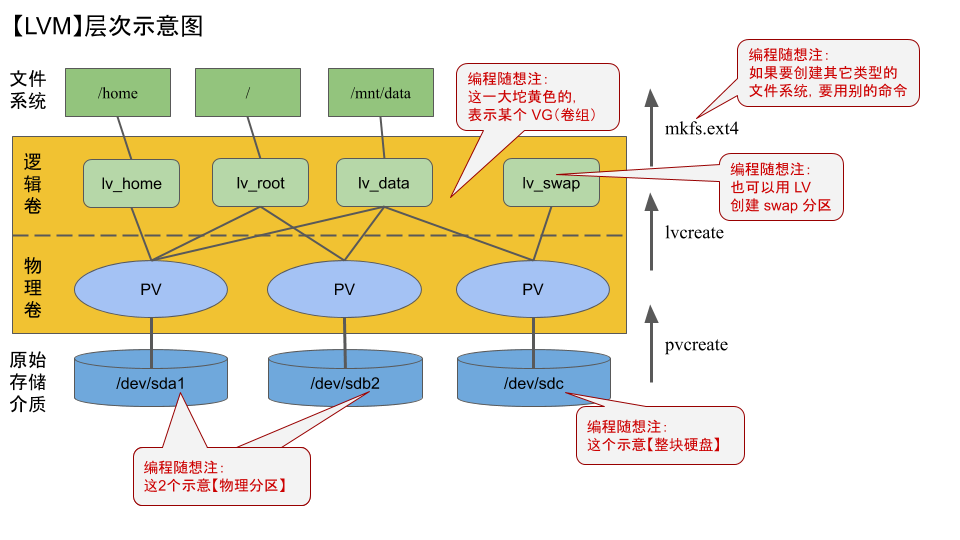
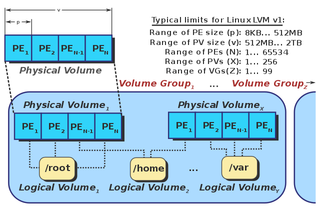
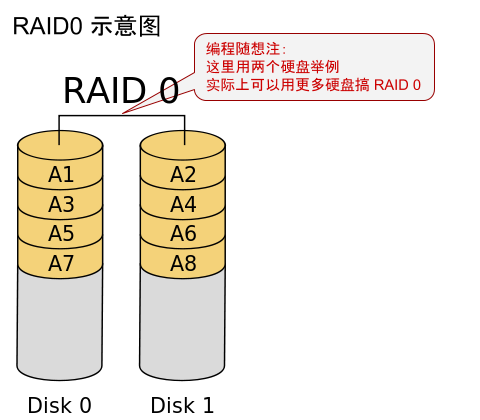
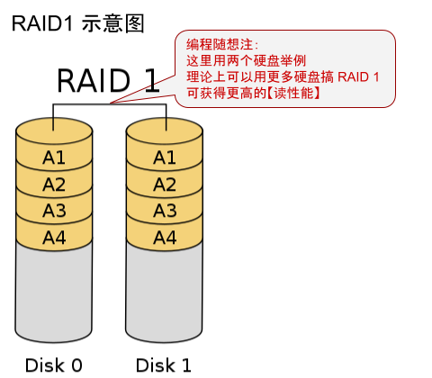
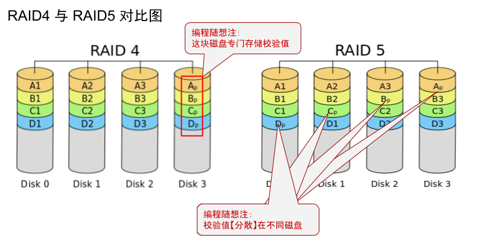
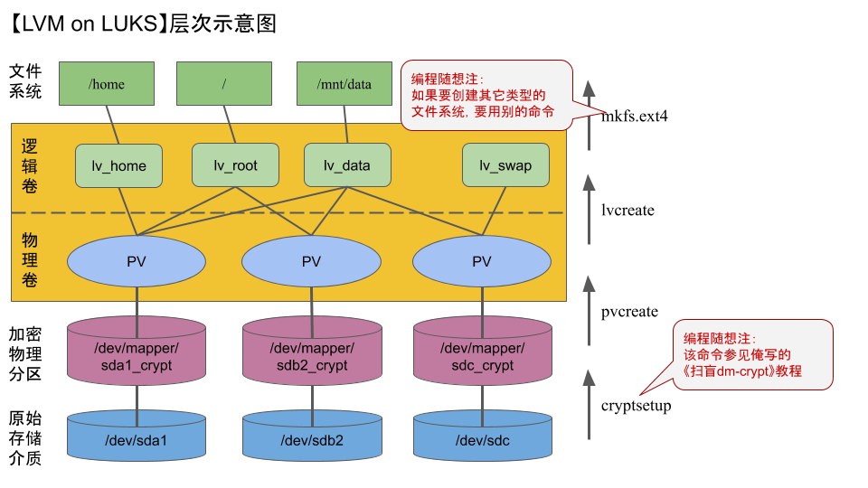
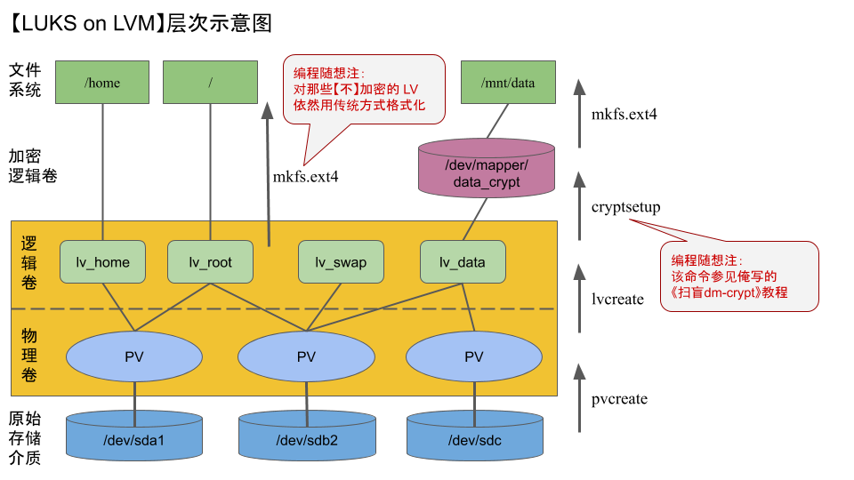
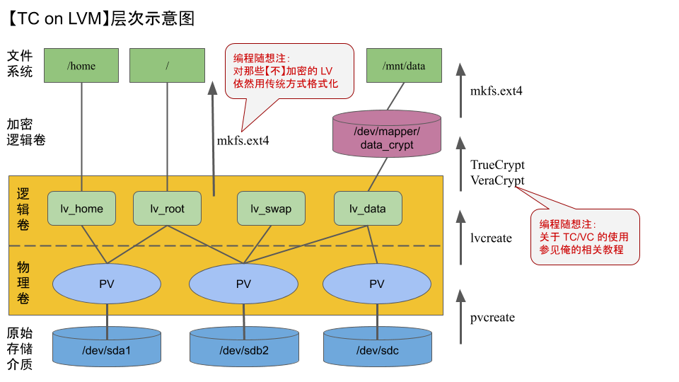

近期的几篇【原创】博文都是长篇（几万字），导致博文的更新间隔有点长，大伙儿别见怪。
考虑到已经有两个月没聊技术了，今天来介绍一下 LVM 这个话题。聊完 LVM 之后，关于“Linux 磁盘加密”的教程，就比较完整啦。
另外，那些关注《回顾六四》系列的同学，别着急。俺争取本月发一篇。
为了讲解 LVM，俺假定你已经掌握了如下知识：
如果你之前没有玩过 LVM，强烈建议如下：
1. 先在【虚拟机】中尝鲜 LVM。【不要】一开始就拿自己的真实环境做试验，以免把你的数据搞坏（注：俺写了虚拟机的扫盲教程，在“这里”）
2. 当你要在真实环境中玩 LVM，一定要先做好【数据备份】
如果你之前已经玩过 LVM，并且比较熟悉，可以只看本文中标注了
LVM 是洋文“Logical Volume Manager”的缩写。理论上，这个玩意儿可以用在不同的操作系统平台（Linux or UNIX）。
但本文只讨论 Linux 上的使用。
为了说明 LVM 的好处，说几个例子：
举例1
很多人在装系统的时候，经常会为【分区】而纠结——
如果你把所有数据都放到一个分区，万一这个分区的文件系统坏了，所有数据都丢了。
如果你划分了多个区，用来放不同的数据；每个分区设多大，会比较伤脑筋——分区太大浪费了，分区太小又怕将来不够用。
有了 LVM 之后，你可以依靠 LVM 来创建逻辑分区。万一某个逻辑分区不够用，可以对该逻辑分区【动态扩容】（原有数据不受影响）。
举例2
假设你的电脑上有2块 500GB 的硬盘，然后你想要搞一个 1TB 的分区。就可以用 LVM 来实现。
举例3
假设你的电脑上有2块 500GB 的硬盘，然后你想要搞3个分区，每个都是 300GB。
如果用传统的分区方式，就很难搞；而用 LVM 就可以轻松搞定。
其它优势
上述几个例子，体现的都是“空间利用率”方面的优势。LVM 【至少】还有如下几个优势：
作为一个软件，LVM 包括两部分：内核模块 ＆ 命令行工具。
内核模块
Linux 内核在很早以前（kernel 2.4 版本）就已经整合了 LVM 的功能。也就是说，如今市面上的发行版，其内核都已经支持 LVM 了。
命令行工具
光内核支持还不够，你还需要通过一些命令行工具才能进行相关的操作。
如今的主流发行版，在其【官方软件仓库】中都已经包含了 LVM 的软件包。你只需要从官方软件仓库就可以安装它。一般来说，它的软件包名称叫做
刚才俺提到——大部分主流发行版，LVM 在软件仓库中的名称叫
这就涉及到 LVM 的版本。
早期整合到 Linux 内核 2.4 版本的 LVM 叫做 LVM1。当内核发展到 2.6 版本时，LVM 进行了一次重大升级，改叫 LVM2。如今所说的 LVM 都是指 LVM2（LVM1 基本上已经淘汰）。
这两者在“存储格式”方面向前兼容（也就是说，用 LVM1 创建的卷，也可以用 LVM2 打开），并且两者的“命令行用法”差不多（LVM2 保留了原有的命令，增加了一些新的命令）
本文后续部分所说的 LVM，如果没有特别说明，都是指 LVM2。
在 LVM 的术语中，“物理卷”（PV）用来对应【底层】的“物理硬盘 or 物理分区”。
你可以用 LVM 的命令行工具，把某个“物理硬盘”或“物理分区”创建成 PV。这个 PV 的容量也就是“物理硬盘 or 物理分区”的容量。
通过 LVM 的命令行工具，还可以把多个 PV 纳入到一个 VG（卷组）中。
你不妨把 VG 想象成一个【存储池】，这个池子的容量也就是加入其中的所有 PV 的容量总和。
在 LVM 的术语中，“逻辑卷”（LV）用来对应【上层】的“逻辑分区”。
你可以从 VG 中创建多个 LV。每次创建 LV 都如同从这个存储池中分配空间，直到所有存储空间都被分配完。
创建好 LV 之后，你可以对这个 LV 进行格式化，就得到一个可用的逻辑分区。
为了方便大伙儿理解，俺花了点力气，画了这张色彩斑斓的示意图（如下）

这张图很重要哦——后续聊“LVM 组合磁盘加密工具”，俺还会在这张图上进行演绎。
使用
针对【硬盘分区】创建 PV（俺拿
针对【整个硬盘】创建 PV（俺拿
（注：执行
有了某个 PV之后，你就可以基于这个 PV 创建 VG。假设你之前已经在
用上述方式创建的 VG 只包含一个 PV。为了让这个 VG 管理多个 PV，可以用
添加了 PV 之后，你可以用如下命令查看该 VG，就可以看到它包含的 PV 数。
创建 LV 包括如下几个步骤：
步骤1
用如下命令，在
为了验证上述命令确实创建了一个 LV，你可以执行
如果你想要创建一个 LV，把 VG 的剩余空间都用掉，可以用如下命令：
步骤2
“步骤1”只是创建了一个“逻辑设备”，你还需要在该设备上创建文件系统。不同的文件系统，创建的命令也不同。下面以 ext4 为例，在刚才那个
步骤3
最后，你用
友情提示
Linux 有个很有用的命令
当你创建了 LV 之后，可以运行该命令体验一下。
你可以编辑系统目录下的
以刚才创建的 LV 举例。如果你想把它的空间再增加 50GB，通过如下步骤：
步骤1
先执行如下命令：
为了避免你搞错，再看如下命令：
步骤2
上述扩容命令仅仅是增加了“LV 的空间”，“文件系统”的空间【还没】变化；为了让“文件系统”也跟着 LV 而变大，需要再用一个“文件系统扩容命令”。
“文件系统扩容命令”与具体的“文件系统【类型】”相关，对于 EXT 家族（ext2、ext3、ext4），该命令是
文件系统的差异
并【不是】所有的文件系统都支持“扩容”的功能。另外，有些文件系统虽然支持“扩容”，但不支持“在线扩容”——也就是说，你要先卸载文件系统，然后再执行“扩容命令”。
如果你觉得 VG 的名称不太满意，可以用
如果你觉得 LV 的名称不太满意，也可以改名，命令如下：
假设你的某个 VG 中包含3个 PV，分别是：sda1，sdb2，sdc3；然后你想要把 sda1 移出该 VG。可以用如下步骤完成：
步骤1
你先要确保 sdb2 与 sdc3 有足够的剩余空间来转储 sda1 上已经存储的数据。你可以先用
步骤2
假如你评估之后，另2个 PV 的剩余空间足够，就可以考虑用如下方式迁移。
如果你想手动干预。比如说：你想要指定 sda1 的数据全都转移到 sdb2，可以用如下命令：
步骤3
完成上述步骤之后，再执行如下命令，那么这个 VG 就【不再】包含 sda1 了。
步骤4
完成上述命令之后，sda1 也不再属于任何 VG 了。但 sda1 还是会被 Linux 内核当成 PV 来看待。前面聊
如果你要把这个 sda1 设备拿去作其它用途，不希望它继续被内核当作 PV，可以用如下命令清除该设备头部的 LVM 标志。
对 LV 缩容一定要小心。操作不当可能会导致 LV 关联的文件系统损坏。
LV 关联的文件系统，如果【类型】不同，“缩容”的操作步骤也会有差异。
下面以 ext4 文件系统为例，假定 VG 名称是
步骤1
为了保险起见，在做这个操作之前，先备份 LV 相关的数据。
步骤2
用
步骤3
用如下命令先检查一下文件系统，以防万一。
步骤4
用如下命令收缩文件系统的存储空间。在以下例子中，把存储空间降低到 25GB。
步骤5
用如下命令把 LV 的存储空间也收缩到 25GB。
假设你不想要某个 LV（包括它存储的数据），通过如下步骤把它干掉：
步骤1
先用
步骤2
假设该 LV 名叫
步骤3
最后用如下命令彻底删除该 LV。
本章节所说的“可移动存储”包括了“外接硬盘”或“U 盘”。这类存储设备的特点是：可以被移除。
为了打字省力，本章节中把这类存储设备简称为“外置存储”。与之对应，固定在电脑中的硬盘称之为“内置存储”。
LVM 可能会把某个 LV 的数据跨多个 PV 存储。因此，要确保这几个 PV【同时可用】。由于“外置存储”并不是一直插在电脑上，所以你要避免在同一个 VG 中混用这两种存储设备。
为了在“外置存储”上使用 LVM，你可以为某个“外置存储设备”单独创建一个 VG——也就是说，该 VG 包含的所有 PV 都在这个“外置存储设备”之上。
当你刚刚插入某个包含 VG 的“外置存储”，Linux 内核并不知道这个设备上有 LVM。此时你需要先运行如下命令，内核会扫描系统中挂载的所有存储设备，就能发现你刚刚插入的“外置存储”中的 VG 并激活它所包含的 LV。
在拔出包含 LVM 的“外置存储”【之前】，你要先用
然后再用如下命令，让这个 VG 中的 LV 处于“离线状态”（不激活状态），
（如果你不关心底层的原理，可以跳过本章节）
当你用
你可以用
LV 与 PV 有点类似——底层也是划分为若干个大小相同的块，洋文称之为“logical extent”，简称 LE。
一般情况下，LE 与 PE 是【一一对应】滴；特殊情况下（比如后面要聊的 RAID1），一个 LE 会同时对应多个 PE。

LVM2 默认的 PE 尺寸是 4MiB。对于新手而言，用【默认的】PE 尺寸就可以啦。
某些老手可能想要自己控制 PE 尺寸——可以在创建 VG 时指定 PE 尺寸，命令如下：
早期的 LVM1，对 LV 有一个硬性上限——每个 LV 最多只能有 65534 个 LE（仔细看刚才那张图的右上角，有 LVM1 的各项指标）。因为这个限制，早期的 LVM1 用户，如果想要创建一个【超大】的 LV，需要在创建 VG 时就指定一个足够大的“PE 尺寸”。
到了如今的 LVM2，每个 LV 包含的 LE 数量已经【没有】那个上限了。所以“PE 尺寸”就不像以前那么重要了。
每个 VG 都有自己的一些元数据。比如刚才所说的“PE 尺寸”就是它的元数据之一；另外，“VG 名称”与“VG 的 UUID”也算是它的元数据。
那“VG 的元数据”存储在哪里捏？它们保存在 PV 的头部——当你创建 VG 时，至少要指定一个或多个 PV；新创建的 VG，其元数据就保存在这些 PV 头部。如果这个 VG 后来又加入其它 PV，其元数据也会保存在这些新的 PV 中。元数据保存多份，也是为了达到某种冗余。
你可以用命令
某些爱思考的读者会问：为啥要要把 VG 的元数据保存在 PV 头部，为啥不存储到某个系统目录？
俺认为：其关键在于【数据自包含】。因为 PV 隶属于 VG，VG 的元数据存储在 PV 就达到【自包含】。当你在某个【外置存储】中创建了 PV，然后又把这个“外置存储”挂到另一台 Linux 电脑，另一个 Linux 内核依然能获取该 PV 对应的“VG 元数据”。
RAID 是洋文“Redundant Array of Inexpensive Disks”的缩写，中文称之为“磁盘冗余阵列”。
搞这个玩意儿的好处包括两方面：
其一，通过增加数据的【冗余度】来提升其【可靠性】（RAID 有好几种类型；除了 RAID0，其它各种类型都可以不同程度地提高可靠性）
其二，提升“读性能”或“写性能”或“读写性能”（取决于你具体使用哪种 RAID 类型）
在 Linux 上，你既可以用 mdadm 也可以用 LVM 来实现 RAID。
因为本文是 LVM 教程，当然只聊 LVM 如何实现 RAID。
RAID 有很多种类型，详细解释参见维基百科的“这个链接”。
LVM 已经支持如下几种 RAID 类型：
硬 RAID
“硬 RAID”需要在电脑主板上插一个“RAID 硬件”（RAID 控制器）。然后由这个“RAID 硬件”来控制多块磁盘——RAID 功能全靠该“RAID 硬件”来完成。
操作系统通过该“RAID 硬件”的驱动来与之打交道。在这种模式下，操作系统【看不到】具体的每一个磁盘。因此，这种这种模式的 RAID 对操作系统来说是【透明】滴。
软 RAID
在这种模式下，每个磁盘都直接连到主板上，操作系统可以看到每个磁盘，RAID 功能由操作系统层面（软件层面）实现。故称之为“软 RAID”。
本文讨论的就是这种。
使用 RAID 的【前提】是——你的电脑上同时装了【多个】物理磁盘。如果没有这个前提，搞 RAID 是没意义滴。
原理
RAID0 有时候也称作“带区集 or 条纹集”。通俗地说就是：把 N 个设备凑成一个大的逻辑设备。每次要写入数据时，先拆分为 N 等份，平均写入每个设备。

空间利用率
完全不浪费（利用率接近
可靠性
虽然利用率最高，但可靠性最差（无冗余）——任何一个设备坏掉，全完蛋。
操作步骤
先创建 N 个大小一样的 PV（此处假设
用如下命令可以创建一个名叫
最后，在这个新创建的 LV 之上创建文件系统（具体命令，前面已经聊过）。
原理
RAID1 有时候也称作“镜像”。也就是说，用 N 块【大小一样】的存储空间，存储相同的数据，以达到冗余的目的。

空间利用率
在常见的 RAID 类型中，RAID1 的【空间利用率】最低（只有
可靠性
可靠性最高（哪怕
操作步骤
先创建
用如下命令可以创建一个名叫
最后，在这个新创建的 LV 之上创建文件系统（具体命令，前面已经聊过）。
原理
RAID5 是针对 RAID4 的改良。这2款的存储风格与前面所说的 RAID0 类似（都用了 stripes 方式拆分数据）；为了做到“可靠性”，RAID4 ＆ RAID5 引入了校验码。它至少需要
俺用下面这张示意图表示 RAID4 ＆ RAID5 的存储差异。RAID4 把校验值全部放到同一个磁盘，会大大增加该磁盘的写操作——每次有数据块被修改，都要更新校验值，都得写这块磁盘。这块磁盘就会成为“写操作”的瓶颈。
（由于 RAID4 明显不如 RAID5，如今用的很少，所以俺就不聊 RAID4 了）

空间利用率
空间利用率
可靠性
可靠性也不差，N 块设备随便坏一块，都可以恢复。同时坏两块，数据会完蛋（但同时坏两块的概率很低）。
操作步骤
先创建 N 个大小一样的 PV（此处假设
用如下命令可以创建一个名叫
最后，在这个新创建的 LV 之上创建文件系统（具体命令，前面已经聊过）。
一旦你在某个 VG 上创建了 RAID 方式的 LV，之后你就【无法】再从该 VG 中移除 PV 了（这是由 RAID 本身的特点决定的）。这种情况下，如果你非要移除该 VG 中的 PV，除非你先把该 VG 上涉及 RAID 存储的那些 LV 先全部删除，然后才能移除 PV。
一般来说，如果你要采用 RAID 的方式，应该为此单独创建一个新的 VG，该 VG 中的 PV 只用于 RAID 方式。
如果你是本博客的长期读者，对“磁盘加密”应该已经耳熟能详；反之，你是新来的读者，可以先看如下这篇，稍微了解相关概念。
《文件加密的扫盲介绍》
对于【国内的】政治高危人士（民运人士、政治异议人士、维权人士 ...），“磁盘加密”尤其重要。如果你属于这类人士，强烈建议你：通过如下博文了解【磁盘加密】的各种招数。
《如何用“磁盘加密”对抗警方的【取证软件】和【刑讯逼供】，兼谈数据删除技巧》
在本文的后续章节，俺会介绍：LVM 与两种磁盘加密格式（LUKS ＆ TC）的搭配方式。
本文后续部分提及的 LUKS 是指 Linux 社区通行的【磁盘加密格式】；要使用该格式，需要用到 dm-crypt 这款软件（该软件已经集成到 Linux 内核中）。
请注意：（在本文的后续章节）当俺提及 LUKS，指的是“磁盘加密【格式】”；当俺提及 dm-crypt，指的是“磁盘加密【软件】”。
由于本章节讨论 LVM 与 LUKS 的整合，显然你需要懂得 dm-crypt 的使用。不太懂的同学可以看如下教程：
《扫盲 dm-crypt——多功能 Linux 磁盘加密工具（兼容 TrueCrypt 和 VeraCrypt）》
LVM 与 LUKS 组合有几种不同的玩法，俺在如下几个小节分别说明。
由于 LVM 与 LUKS 组合之后，系统内的“块设备”关系会变得复杂（层次变多），你要记得用前面介绍的
先看如下示意图：

如何加密“原始存储介质”（物理分区 or 物理盘），俺在《扫盲 dm-crypt》一文中已经聊过，不再重复唠叨。
加密完某个设备后，你可以用
接下来就简单啦——你只需要用前面章节的方法（
同样先上图：

你需要先完成 PV、VG、LV 的创建工作。如果你想在某个 LV 上创建 LUKS 加密，这个 LV 先【不】格式化。
以上图中的
完成加密之后，再用
再然后，你就可以对它（映射后的设备）进行格式化，创建文件系统。
基于【管理成本】的考虑
对于“LVM on LUKS”，你需要在 PV 层面进行加密；对于“LUKS on LVM”，则是在 LV 层面进行加密。
多数情况下，“LV 的数量”总是远远大于“PV 的数量”，所以“LUKS on LVM”需要管理更多的加密盘，也就需要搞更多的“password 或 key file”。这会增加你的管理负担。
基于【可见性】的考虑
假设别人可以拿到你的硬盘（比如“失窃”或“电脑被警方没收”），这两种方式体现了不同的【可见性】（保密性）。
“LVM on LUKS”模式
对方首先看到的【加密的】LUKS 磁盘，看不到“LVM 的布局”，更加看不到每个 LV 的数据。
“LUKS on LVM”模式
由于 VG ＆ PV 的头部是明文滴，对方可以看到你的“LVM 的布局”（包括你划分了多少个 LV），但看不到“加密 LV”的内部数据。
由于该模式在 LV 层面加密，如果你只加密了某些 LV，还有某些 LV【未加密】。那么，这些【未加密】的 LV 的数据也会被对方看到。
小结
基于上述讨论，俺倾向于用“LVM on LUKS”。
但“LUKS on LVM”依然有其价值，因为某些特殊情况下，可能会采取“LUKS on LVM on LUKS”（3层嵌套）的磁盘布局，就需要同时用到上述两种技能。
当然，你还可以玩更复杂的花样，比如“TC on LVM on LUKS”或者“LUKS on LVM on TC” ......
由于这种更复杂的组合方式同时涉及【多种】磁盘加密格式，俺在本文末尾专门用一个单独的章节来讨论。
本文后续部分提及的 TC 侧重指 TrueCrypt 对应的【磁盘加密格式】。
虽然 TrueCrypt 已经死亡，但是它的替代品（VeraCrypt）【完全兼容】TrueCrypt 原有的功能。另外，LUKS（dm-crypt）也可以打开 TC 加密盘。所以，你在 Linux 上依然可以继续拥抱“TC 加密格式”。
由于本章节讨论 LVM 与 TC 的整合，显然你需要懂相关的工具。不太懂的同学可以看如下教程：
《TrueCrypt 使用经验》（系列）
《扫盲 VeraCrypt——跨平台的 TrueCrypt 替代品》
LVM 与 TC 组合有几种不同的玩法，俺在如下几个小节分别说明：
先看如下示意图：

你先用“TrueCrypt 或 VeraCrypt”加密“原始存储介质”（物理分区 or 物理盘）。之后的操作，就【不】需要再用到“TrueCrypt 或 VeraCrypt”了（后续的操作都通过 LUKS 相关工具来完成）。
加密完某个设备后，你可以用
接下来就简单啦——你只需要用前面章节的方法（
同样先上图：

你需要先完成 PV、VG、LV 的创建工作。如果你想在某个 LV 上创建 LUKS 加密，这个 LV 先【不】格式化。
以上图中的
完成加密之后，再用
再然后，你就可以对它（映射后的设备）进行格式化，创建文件系统。
在前面讨论“LVM 与 LUKS 组合”的时候，俺已经对比了“LUKS on LVM”与“LVM on LUKS”的优劣。
“TC on LVM”与“LVM on TC”的对比，道理完全类似，俺就不重复唠叨啦。
当然，你还可以玩更复杂的花样，比如“TC on LVM on LUKS”或者“LUKS on LVM on TC” ......
由于这种更复杂的组合方式同时涉及【多种】磁盘加密格式，俺在下一个章节专门讨论。
开博十周年之际，俺写了一篇《为啥朝廷总抓不到俺——十年反党活动的安全经验汇总》，其中已经聊到“组合 LUKS 与 TC”。
由于上述这篇博文是【全面汇总】，“磁盘加密”只是其中一个细分领域，所以当时没细聊。今天借“扫盲 LVM”的机会，细聊一下。
当年俺写《扫盲 dm-crypt——多功能 Linux 磁盘加密工具（兼容 TrueCrypt 和 VeraCrypt）》的时候，整理过一个表格。这次正好直接拿过来用，并略作补充。
（上述表格的最后一项）关于【加密格式的模糊性】，恐怕很多读者（包括技术老手）不一定明白俺在说啥。稍微解释一下：
TC 这种存储格式有个显著的优点是——【没有】明显的头部信息。当你把某个分区加密成 TC 格式，这个分区的数据看起来就像是【全随机】的数据，没有任何明显的标志。
作为对比，用 LUKS 格式加密的分区，在分区头部有 LUKS 的标志。不光是 LUKS，大部分磁盘加密工具都会保存“头部标志信息”。
为啥大部分磁盘加密【格式】都有头部标志，而 TC 这种格式却没有？一个很重要的原因在于——大部分磁盘加密工具都只是为了做到“数据保密”。而当初开发 TrueCrypt 的时候，其开发团队不光为了达到“数据保密”，还考虑到要“对付警方”。
如果你用普通的磁盘加密工具，加密分区有标志。警方如果拿到你的硬盘，虽然无法打开加密分区，但警方可以看出“这个分区被加密了”，于是警方可以通过各种方法（包括刑讯逼供）来迫使你交出加密分区的密码。
作为对比，采用 TC 格式的加密分区，【没有】任何头部标志。也就是说，警方拿到你的硬盘，他们【无法判断】这个分区到底是“加密分区”，还是一个“未格式化的分区”。
功能的差异
刚才那个表格已经列出了两种加密格式的对比。两者各有少数优点是对方【无法替代】滴。
显然，组合两者很有必要。
隐蔽性的考虑
这方面的考虑，主要针对【警方】。
为了说明“隐蔽性”这个概念，俺先拿“网络加密代理”来进行类比。
10年前（2010）俺开始写《如何隐藏你的踪迹，避免跨省追捕》系列教程，之后俺就一直唠叨“Tor 的重要性”，也一直唠叨“要对 Tor 配置【前置代理】”。
对前者（Tor 的重要性），很多读者都理解了；但对后者（为啥用前置代理），很多读者存在【误解】。很多人误以为：是因为 Tor 在天朝难以独立联网，所以俺才强调“Tor over 前置代理”这种玩法。
其实这只是其中一个原因（甚至不是主要原因）。即使对于【墙外】的网民，（他们可以直接用 Tor）俺还是建议他们给 Tor 加前置代理。
为啥捏？
如果你直接使用 Tor，当 ISP（电信运营商）监控你的流量，就会发现你在使用 Tor——单单这个信息就已经增加了你的风险。对警方而言，使用 Tor 的人更有可能是个危险分子。
而如果你用了“Tor over 翻墙软件”，即使 ISP 监控你的流量，顶多只知道你在翻墙，但【无法】知道你在用 Tor。由于“翻墙网民总数”远远大于“Tor 用户总数”。所以，（在 ISP 看来）你就不会那么显眼。
前面说了一大堆都是铺垫，以此来说明，为啥要组合“LUKS + TC”。
TC 就如同上述例子中的 Tor。对于有数据加密需求的 Linux 用户，用 LUKS 就已经足够了。如果某个 Linux 用户采用 TC 加密格式，在警方看来，这个用户更有可能是危险分子。不妨换位思考一下（站在警方的角度思考）——那些用 TC 加密格式的人，很可能手头有【高度敏感的数据】需要保密。
为了避免上述风险，你必须做到——既用 TC 加密格式，又不能让别人看出你在用 TC 加密格式。
为了不让别人看出你在使用 TC 格式，有几个注意事项：
注意事项1——空间占比太大的物理分区，【不要】用 TC 格式
对于容量较大的硬盘，其【大部分空间】应该用 LUKS 加密格式，【不要】用 TC 格式。
为了让你明白其中的原因，拿个栗子来说事儿：
假设你电脑硬盘 500GB。一般来说，“引导分区”很小，忽略不计；假设 LUKS 加密的根分区占了 30GB；然后你把其它空间都在第三个分区。也就是说，第三个分区大约 470GB。并且你把这个分区用 TC 格式加密。前面俺提到：TC 格式具有【模糊性】，其效果看起来类似“未格式化的空间”。
话说某天，警方拿到你的硬盘，然后你企图欺骗警方说，第三个分区是“未使用的分区”。对方肯定不相信。因为这么大一个硬盘，竟然空闲了超过 90% 的空间没使用，怎么可能捏？！哪怕是个【初级水平】的警方取证人员，也会觉得其中有诈。
注意事项2——空间占比太大的 LV（逻辑卷），【不要】用 TC 格式
这个注意事项，其道理类似于前一条，俺就不再重复唠叨啦。
注意事项3——物理系统【不要】装 TC 相关的软件
前面提到：“加密根分区”只能用 LUKS，所以，你的系统肯定已经有 LUKS 相关的软件模块。如果你已经有了 LUKS，却又额外安装了 TureCrypt / VeraCrypt（或诸如此类的软件）。这就容易引起别人的怀疑。
为了尽量降低不必要的风险，你要确保系统中【没有】TC/VC 或诸如此类的软件。
某些技术小白可能会问：没有这些软件，如何操作 TC 加密盘捏？
很简单，因为 dm-crypt 软件包已经提供了
遗憾的是，虽然
咋办捏？
办法之一是：你在某个“虚拟机”（Guest OS）中安装 TrueCrypt 或 VeraCrypt，然后把“物理系统”（Host OS）中需要加密的分区挂载到 VM（Guest OS），在虚拟机中完成“创建加密盘”的操作。完事儿之后，把虚拟机【回退快照】就可以彻底抹掉你刚才创建加密盘的操作痕迹。之后对 TC 加密盘的操作（挂载加密盘），全靠
（注：如何在 Guest OS 中挂载 Host OS 的分区，有一些技巧。有空的话，另写篇博文来聊）
在本小节的讨论中，俺以【单硬盘】电脑来举例（至于【多】硬盘的情况，大伙儿请依样画葫芦）。
另外，为了叙述方便，俺把如下几种分区都统称为“引导分区”。
内置硬盘——方案1
内置硬盘——方案2
外置硬盘的方案
对于外置硬盘，你也可以参考上述几个方案。只需去掉“引导分区 ＆ 系统分区”，其它部分差不多。
其它方案
上述几种方案只是帮你启发思路。实际操作过程中，你可以进一步发挥。
俺博客上，和本文相关的帖子（需翻墙）：
《扫盲 Linux＆UNIX 命令行——从“电传打字机”聊到“shell 脚本编程”》
《文件加密的扫盲介绍》
《TrueCrypt 使用经验》（系列）
《扫盲 VeraCrypt——跨平台的 TrueCrypt 替代品》
《扫盲 dm-crypt——多功能 Linux 磁盘加密工具（兼容 TrueCrypt 和 VeraCrypt）》
《如何用“磁盘加密”对抗警方的【取证软件】和【刑讯逼供】，兼谈数据删除技巧》
《为啥朝廷总抓不到俺——十年反党活动的安全经验汇总》
《文件备份技巧：组合“虚拟加密盘”与“网盘”》
《扫盲操作系统虚拟机》（系列）
考虑到已经有两个月没聊技术了，今天来介绍一下 LVM 这个话题。聊完 LVM 之后，关于“Linux 磁盘加密”的教程，就比较完整啦。
另外，那些关注《回顾六四》系列的同学，别着急。俺争取本月发一篇。
★本文的目标读者
◇预备知识
为了讲解 LVM，俺假定你已经掌握了如下知识：
Linux 基本的命令行技能（命令行菜鸟请看“这篇扫盲”）
Linux 磁盘分区的基本知识（比如：创建分区、删除分区 ......）
Linux 文件系统的基本知识（比如：格式化文件系统，挂载文件系统 ......）
磁盘加密工具 dm-crypt（LUKS）的基本知识（扫盲教程参见“这里”）
磁盘加密工具 TrueCrypt/VeraCrypt 的基本知识（扫盲教程参见“这里”和“这里”）
◇新手须知
如果你之前没有玩过 LVM，强烈建议如下：
1. 先在【虚拟机】中尝鲜 LVM。【不要】一开始就拿自己的真实环境做试验，以免把你的数据搞坏（注：俺写了虚拟机的扫盲教程，在“这里”）
2. 当你要在真实环境中玩 LVM，一定要先做好【数据备份】
◇老手须知
如果你之前已经玩过 LVM，并且比较熟悉，可以只看本文中标注了
（高级教程）的那个几个章节。
★LVM 概述
◇LVM 是啥？
LVM 是洋文“Logical Volume Manager”的缩写。理论上，这个玩意儿可以用在不同的操作系统平台（Linux or UNIX）。
但本文只讨论 Linux 上的使用。
◇LVM 有啥用？
为了说明 LVM 的好处，说几个例子：
举例1
很多人在装系统的时候，经常会为【分区】而纠结——
如果你把所有数据都放到一个分区，万一这个分区的文件系统坏了，所有数据都丢了。
如果你划分了多个区，用来放不同的数据；每个分区设多大，会比较伤脑筋——分区太大浪费了，分区太小又怕将来不够用。
有了 LVM 之后，你可以依靠 LVM 来创建逻辑分区。万一某个逻辑分区不够用，可以对该逻辑分区【动态扩容】（原有数据不受影响）。
举例2
假设你的电脑上有2块 500GB 的硬盘，然后你想要搞一个 1TB 的分区。就可以用 LVM 来实现。
举例3
假设你的电脑上有2块 500GB 的硬盘，然后你想要搞3个分区，每个都是 300GB。
如果用传统的分区方式，就很难搞；而用 LVM 就可以轻松搞定。
其它优势
上述几个例子，体现的都是“空间利用率”方面的优势。LVM 【至少】还有如下几个优势：
与 RAID 工具的无缝整合
与磁盘加密工具的无缝整合
逻辑分区的【缓存】（cache）功能
逻辑分区的【快照】（snapshot）功能
......
◇LVM 与 Linux 的关系
作为一个软件，LVM 包括两部分：内核模块 ＆ 命令行工具。
内核模块
Linux 内核在很早以前（kernel 2.4 版本）就已经整合了 LVM 的功能。也就是说，如今市面上的发行版，其内核都已经支持 LVM 了。
命令行工具
光内核支持还不够，你还需要通过一些命令行工具才能进行相关的操作。
如今的主流发行版，在其【官方软件仓库】中都已经包含了 LVM 的软件包。你只需要从官方软件仓库就可以安装它。一般来说，它的软件包名称叫做
lvm2◇LVM 的版本——LVM1 与 LVM2 的区别
刚才俺提到——大部分主流发行版，LVM 在软件仓库中的名称叫
lvm2。显然，应该还有一个叫 lvm1 的东东。这就涉及到 LVM 的版本。
早期整合到 Linux 内核 2.4 版本的 LVM 叫做 LVM1。当内核发展到 2.6 版本时，LVM 进行了一次重大升级，改叫 LVM2。如今所说的 LVM 都是指 LVM2（LVM1 基本上已经淘汰）。
这两者在“存储格式”方面向前兼容（也就是说，用 LVM1 创建的卷，也可以用 LVM2 打开），并且两者的“命令行用法”差不多（LVM2 保留了原有的命令，增加了一些新的命令）
本文后续部分所说的 LVM，如果没有特别说明，都是指 LVM2。
★LVM 的三个基本概念
◇物理卷——PV（Physical Volume）
在 LVM 的术语中，“物理卷”（PV）用来对应【底层】的“物理硬盘 or 物理分区”。
你可以用 LVM 的命令行工具，把某个“物理硬盘”或“物理分区”创建成 PV。这个 PV 的容量也就是“物理硬盘 or 物理分区”的容量。
◇卷组——VG（Volume Group）
通过 LVM 的命令行工具，还可以把多个 PV 纳入到一个 VG（卷组）中。
你不妨把 VG 想象成一个【存储池】，这个池子的容量也就是加入其中的所有 PV 的容量总和。
◇逻辑卷——LV（Logical Volume）
在 LVM 的术语中，“逻辑卷”（LV）用来对应【上层】的“逻辑分区”。
你可以从 VG 中创建多个 LV。每次创建 LV 都如同从这个存储池中分配空间，直到所有存储空间都被分配完。
创建好 LV 之后，你可以对这个 LV 进行格式化，就得到一个可用的逻辑分区。
◇示意图
为了方便大伙儿理解，俺花了点力气，画了这张色彩斑斓的示意图（如下）
这张图很重要哦——后续聊“LVM 组合磁盘加密工具”，俺还会在这张图上进行演绎。
★常见的用法
◇创建 PV
使用
pvcreate 命令创建 PV。你可以针对【硬盘分区】上创建 PV，也可以针对【整个硬盘】创建 PV，命令分别如下针对【硬盘分区】创建 PV（俺拿
/dev/sdb1 这个设备名举例，你要根据具体情况修改）pvcreate /dev/sdb1
针对【整个硬盘】创建 PV（俺拿
/dev/sdc 这个设备名举例，你要根据具体情况修改）pvcreate /dev/sdc为了验证上述命令确实创建了一个 PV，你可以执行
pvs 命令，它会列出系统中所有 PV 的名称。（注：执行
pvcreate 命令之后，它会在对应设备的头部写入一个 LVM 的标志，表示这个设备已经被 LVM 用作“物理卷”）◇创建 VG
有了某个 PV之后，你就可以基于这个 PV 创建 VG。假设你之前已经在
/dev/sdb1 这个设备（物理分区）上创建了 PV，就可以用如下命令创建一个新的 VG，VG 的名称是 VG_XXX（这个名称纯粹是为了举例，你也可以用其它字母组合作为 VG 的名称）：vgcreate VG_XXX /dev/sdb1为了验证上述命令确实创建了一个 VG，你可以执行
vgs 命令，它会列出系统中所有 VG 的名称。◇VG 扩容（添加新的 PV）
用上述方式创建的 VG 只包含一个 PV。为了让这个 VG 管理多个 PV，可以用
vgextend 命令加入其它 PV。举例如下：pvcreate /dev/sdc1 vgextend VG_XXX /dev/sdc1（注：前一个命令创建了新的 PV，后一个命令把这个 PV 加入到刚才那个 VG 里面）
添加了 PV 之后，你可以用如下命令查看该 VG，就可以看到它包含的 PV 数。
vgdisplay VG_XXX
◇创建 LV
创建 LV 包括如下几个步骤：
步骤1
用如下命令，在
VG_XXX 中创建一个新的 LV，名叫 lv_xxxx（这个名字纯属举例，你可以用别的字母组合）。lvcreate -L 100G -n lv_xxxx VG_XXX请注意：上述命令中的
-L 和 100G 都是大写；其中的 G，表示 GB 为单位。你也可以用大写 M 后缀表示多少兆字节（MB）。为了验证上述命令确实创建了一个 LV，你可以执行
lvs 命令，它会列出系统中所有 LV 的名称，以及每个 LV 所属的 VG。如果你想要创建一个 LV，把 VG 的剩余空间都用掉，可以用如下命令：
lvcreate --extents 100%FREE VG_XXX -n lv_xxxx
步骤2
“步骤1”只是创建了一个“逻辑设备”，你还需要在该设备上创建文件系统。不同的文件系统，创建的命令也不同。下面以 ext4 为例，在刚才那个
lv_xxxx 之上创建 ext4 文件系统。mkfs.ext4 /dev/VG_XXX/lv_xxxx
步骤3
最后，你用
mount 命令挂载新创建的文件系统。友情提示
Linux 有个很有用的命令
lsblk，他以【树状风格】展示系统中所有“块设备”（block device）的层次关系；如果该设备有挂载点，也会一并标注。当你创建了 LV 之后，可以运行该命令体验一下。
◇自动挂载 LV
你可以编辑系统目录下的
/etc/fstab 文件，把需要自动挂载的“LV 路径”以及“挂载点路径”添加到该文件中。◇LV 扩容
以刚才创建的 LV 举例。如果你想把它的空间再增加 50GB，通过如下步骤：
步骤1
先执行如下命令：
lvresize -L +50G VG_XXX/lv_xxxx（注：上述命令中，
VG_XXX 是“VG 名称”；lv_xxxx 是“LV 名称”；两者之间用【半角斜杠】相连接）为了避免你搞错，再看如下命令：
lvresize -L 50G VG_XXX/lv_xxxx上述两个命令，就差了一个【加号】。
-L +50G 表示空间【再增加 50GB】；-L 50G 表示空间【增加到 50GB】。步骤2
上述扩容命令仅仅是增加了“LV 的空间”，“文件系统”的空间【还没】变化；为了让“文件系统”也跟着 LV 而变大，需要再用一个“文件系统扩容命令”。
“文件系统扩容命令”与具体的“文件系统【类型】”相关，对于 EXT 家族（ext2、ext3、ext4），该命令是
resize2fs，用法如下：resize2fs /dev/VG_XXX/lv_xxxxext 家族的好处是——支持【在线扩容】，你不需要卸载文件系统，就可以直接扩大其容量。
文件系统的差异
并【不是】所有的文件系统都支持“扩容”的功能。另外，有些文件系统虽然支持“扩容”，但不支持“在线扩容”——也就是说，你要先卸载文件系统，然后再执行“扩容命令”。
★不那么常见的用法
◇VG 改名
如果你觉得 VG 的名称不太满意，可以用
vgrename 命令改名。举例如下：vgrename 旧名称 新名称对 VG 改名之后，可以用
vgs 命令进行验证。◇LV 改名
如果你觉得 LV 的名称不太满意，也可以改名，命令如下：
lvrename VG名称 LV旧名称 LV新名称对 LV 改名之后，可以用
lvs 命令进行验证。◇VG 缩容（移除 PV）
假设你的某个 VG 中包含3个 PV，分别是：sda1，sdb2，sdc3；然后你想要把 sda1 移出该 VG。可以用如下步骤完成：
步骤1
你先要确保 sdb2 与 sdc3 有足够的剩余空间来转储 sda1 上已经存储的数据。你可以先用
pvdisplay 命令分别看一下这3个 PV，评估空间的使用情况。步骤2
假如你评估之后，另2个 PV 的剩余空间足够，就可以考虑用如下方式迁移。
pvmove /dev/sda1（注：上述命令会智能地判断 sda1 属于哪个 VG，并把它的数据转移到【同一个 VG】的其它 PV）
如果你想手动干预。比如说：你想要指定 sda1 的数据全都转移到 sdb2，可以用如下命令：
pvmove /dev/sda1 /dev/sdb2（注：上述命令的前提是：sdb2 有足够的剩余空间来容纳 sda1 已存储的数据）
步骤3
完成上述步骤之后，再执行如下命令，那么这个 VG 就【不再】包含 sda1 了。
vgreduce VG_XXX /dev/sda1
步骤4
完成上述命令之后，sda1 也不再属于任何 VG 了。但 sda1 还是会被 Linux 内核当成 PV 来看待。前面聊
pvcreate 的时候，俺说过：pvcreate 命令会往设备头部写入一个 LVM 的标志。如果你要把这个 sda1 设备拿去作其它用途，不希望它继续被内核当作 PV，可以用如下命令清除该设备头部的 LVM 标志。
pvremove /dev/sda1反之，如果你要把这个 PV 拿去给别的 VG 使用，就【不】需要执行上述
pvremove 命令。◇LV 缩容
对 LV 缩容一定要小心。操作不当可能会导致 LV 关联的文件系统损坏。
LV 关联的文件系统，如果【类型】不同，“缩容”的操作步骤也会有差异。
下面以 ext4 文件系统为例，假定 VG 名称是
VG_XXX，LV 的名称是 lv_xxxx步骤1
为了保险起见，在做这个操作之前，先备份 LV 相关的数据。
步骤2
用
umount 命令卸载 LV 对应的文件系统。步骤3
用如下命令先检查一下文件系统，以防万一。
e2fsck -f /dev/VG_XXX/lv_xxxx
步骤4
用如下命令收缩文件系统的存储空间。在以下例子中，把存储空间降低到 25GB。
resize2fs /dev/VG_XXX/lv_xxxx 25G（再次提醒：
resize2fs 命令仅用于 ext 家族的文件系统）步骤5
用如下命令把 LV 的存储空间也收缩到 25GB。
lvreduce -L 25G /dev/VG_XXX/lv_xxxx
◇删除 LV
假设你不想要某个 LV（包括它存储的数据），通过如下步骤把它干掉：
步骤1
先用
umount 命令卸载 LV 之上的文件系统（挂载点）步骤2
假设该 LV 名叫
lv_xxxx，VG 名叫 VG_XXX，先用如下命令使之处于【不激活】状态。lvchange -an /dev/VG_XXX/lv_xxxx
步骤3
最后用如下命令彻底删除该 LV。
lvremove /dev/VG_XXX/lv_xxxx
★【可移动存储】的注意事项
本章节所说的“可移动存储”包括了“外接硬盘”或“U 盘”。这类存储设备的特点是：可以被移除。
为了打字省力，本章节中把这类存储设备简称为“外置存储”。与之对应，固定在电脑中的硬盘称之为“内置存储”。
◇【不要】在同一个 VG 混用“外置存储”与“内置存储”
LVM 可能会把某个 LV 的数据跨多个 PV 存储。因此，要确保这几个 PV【同时可用】。由于“外置存储”并不是一直插在电脑上，所以你要避免在同一个 VG 中混用这两种存储设备。
◇如何在“外置存储设备”上使用 LVM？
为了在“外置存储”上使用 LVM，你可以为某个“外置存储设备”单独创建一个 VG——也就是说，该 VG 包含的所有 PV 都在这个“外置存储设备”之上。
◇【挂载】“外置存储”中的 VG
当你刚刚插入某个包含 VG 的“外置存储”，Linux 内核并不知道这个设备上有 LVM。此时你需要先运行如下命令，内核会扫描系统中挂载的所有存储设备，就能发现你刚刚插入的“外置存储”中的 VG 并激活它所包含的 LV。
vgscan vgchange -ay为了判断内核是否确实找到了外置存储中的 VG，可以再通过
lvs 命令看一下。◇【卸载】“外置存储”中的 VG
在拔出包含 LVM 的“外置存储”【之前】，你要先用
umount 命令卸载与这个 VG 有关的【每个】文件系统（挂载点）。然后再用如下命令，让这个 VG 中的 LV 处于“离线状态”（不激活状态），
vgchange -an VG_XXX最后再拔出该设备。
★简述 LVM 的原理
（如果你不关心底层的原理，可以跳过本章节）
◇PE（Physical Extent）
当你用
pvcreate 命令创建 PV 时，该命令会（在逻辑上）把物理存储介质划分为了 N 个大小相同的块，洋文称之为“physical extent”，简称 PE。你可以用
pvdisplay 命令查看某个 PV 的详细信息，就能看到如下信息：PE 的尺寸
该 PV 中的 PE 总数
已分配的 PE 总数
未分配的 PE 总数
......
◇LE（Logical Extent）
LV 与 PV 有点类似——底层也是划分为若干个大小相同的块，洋文称之为“logical extent”，简称 LE。
一般情况下，LE 与 PE 是【一一对应】滴；特殊情况下（比如后面要聊的 RAID1），一个 LE 会同时对应多个 PE。
◇示意图
◇PE 的尺寸
LVM2 默认的 PE 尺寸是 4MiB。对于新手而言，用【默认的】PE 尺寸就可以啦。
某些老手可能想要自己控制 PE 尺寸——可以在创建 VG 时指定 PE 尺寸，命令如下：
vgcreate -s 64M VG_XXX /dev/sdb1（注：上述命令指定新创建的 VG 使用 64MiB 作为 PE 尺寸；对于 LVM2，PE 最小值是 1KiB）
早期的 LVM1，对 LV 有一个硬性上限——每个 LV 最多只能有 65534 个 LE（仔细看刚才那张图的右上角，有 LVM1 的各项指标）。因为这个限制，早期的 LVM1 用户，如果想要创建一个【超大】的 LV，需要在创建 VG 时就指定一个足够大的“PE 尺寸”。
到了如今的 LVM2，每个 LV 包含的 LE 数量已经【没有】那个上限了。所以“PE 尺寸”就不像以前那么重要了。
◇VG 的元数据
每个 VG 都有自己的一些元数据。比如刚才所说的“PE 尺寸”就是它的元数据之一；另外，“VG 名称”与“VG 的 UUID”也算是它的元数据。
那“VG 的元数据”存储在哪里捏？它们保存在 PV 的头部——当你创建 VG 时，至少要指定一个或多个 PV；新创建的 VG，其元数据就保存在这些 PV 头部。如果这个 VG 后来又加入其它 PV，其元数据也会保存在这些新的 PV 中。元数据保存多份，也是为了达到某种冗余。
你可以用命令
vgcfgbackup 把某个 VG 的元数据导出到单个文件中；需要的话，还可以再用命令 vgcfgrestore 导入。某些爱思考的读者会问：为啥要要把 VG 的元数据保存在 PV 头部，为啥不存储到某个系统目录？
俺认为：其关键在于【数据自包含】。因为 PV 隶属于 VG，VG 的元数据存储在 PV 就达到【自包含】。当你在某个【外置存储】中创建了 PV，然后又把这个“外置存储”挂到另一台 Linux 电脑，另一个 Linux 内核依然能获取该 PV 对应的“VG 元数据”。
★RAID 简介
◇啥是 RAID？
RAID 是洋文“Redundant Array of Inexpensive Disks”的缩写，中文称之为“磁盘冗余阵列”。
搞这个玩意儿的好处包括两方面：
其一，通过增加数据的【冗余度】来提升其【可靠性】（RAID 有好几种类型；除了 RAID0，其它各种类型都可以不同程度地提高可靠性）
其二，提升“读性能”或“写性能”或“读写性能”（取决于你具体使用哪种 RAID 类型）
◇Linux 的 RAID 工具
在 Linux 上，你既可以用 mdadm 也可以用 LVM 来实现 RAID。
因为本文是 LVM 教程，当然只聊 LVM 如何实现 RAID。
◇RAID 的类型
RAID 有很多种类型，详细解释参见维基百科的“这个链接”。
LVM 已经支持如下几种 RAID 类型：
RAID 0考虑到篇幅，俺挑几种常用的 RAID 类型，在下一个章节介绍。介绍的时候，会顺便说说该 RAID 类型的【原理】。
RAID 1
RAID 4
RAID 5
RAID 6
RAID 10
◇“软 RAID”与“硬 RAID”
硬 RAID
“硬 RAID”需要在电脑主板上插一个“RAID 硬件”（RAID 控制器）。然后由这个“RAID 硬件”来控制多块磁盘——RAID 功能全靠该“RAID 硬件”来完成。
操作系统通过该“RAID 硬件”的驱动来与之打交道。在这种模式下，操作系统【看不到】具体的每一个磁盘。因此，这种这种模式的 RAID 对操作系统来说是【透明】滴。
软 RAID
在这种模式下，每个磁盘都直接连到主板上，操作系统可以看到每个磁盘，RAID 功能由操作系统层面（软件层面）实现。故称之为“软 RAID”。
本文讨论的就是这种。
◇哪些同学需要考虑 RAID？
使用 RAID 的【前提】是——你的电脑上同时装了【多个】物理磁盘。如果没有这个前提，搞 RAID 是没意义滴。
★（高级教程）LVM 自带的 RAID 功能
◇RAID 0 的玩法
原理
RAID0 有时候也称作“带区集 or 条纹集”。通俗地说就是：把 N 个设备凑成一个大的逻辑设备。每次要写入数据时，先拆分为 N 等份，平均写入每个设备。
空间利用率
完全不浪费（利用率接近
100%）。在所有 RAID 类型中，这种的空间利用率最高。可靠性
虽然利用率最高，但可靠性最差（无冗余）——任何一个设备坏掉，全完蛋。
操作步骤
先创建 N 个大小一样的 PV（此处假设
N = 2），并加入到同一个 VG 里面（假设 VG 名称叫做 vg_raid）。具体如何做，前面已经聊过。用如下命令可以创建一个名叫
lv_xxxx 的逻辑卷，并设定以 RAID0 方式存储数据。lvcreate --type raid0 --stripes 2 --extents 100%FREE -n lv_xxxx vg_raid上述命令的参数说明：
| 参数 | 说明 |
|---|---|
| --type raid0 | 采用 RAID 0 的方式存储数据 |
| --stripes 2 | 用来创建“带区集”的设备数，在本示例中是 2对于 RAID0，该参数的最大值为 64 |
| --extents 100%FREE | 前面已经聊过，不再重复 |
最后，在这个新创建的 LV 之上创建文件系统（具体命令，前面已经聊过）。
◇RAID 1 的玩法
原理
RAID1 有时候也称作“镜像”。也就是说，用 N 块【大小一样】的存储空间，存储相同的数据，以达到冗余的目的。
空间利用率
在常见的 RAID 类型中，RAID1 的【空间利用率】最低（只有
1/N）。可靠性
可靠性最高（哪怕
N-1 个设备【同时】坏掉，数据都还在）。操作步骤
先创建
N 个大小一样的 PV（此处假设 N = 2），并加入到同一个 VG 里面（假设 VG 名称叫做 vg_raid）。具体如何做，前面已经聊过。用如下命令可以创建一个名叫
lv_xxxx 的逻辑卷，并设定以 RAID1 方式存储数据。lvcreate --type raid1 --mirrors 1 --nosync --extents 100%FREE -n lv_xxxx vg_raid上述命令的参数说明：
| 参数 | 说明 |
|---|---|
| --type raid1 | 采用 RAID 1 的方式存储数据 |
| --mirrors 1 | 镜像设备的数量。 在本示例中用了两个存储设备，其中一个用作镜像； 如果是3个设备搞 RAID1，该参数就是 2（以此类推）（对于 RAID1，该参数的最大值为 9） |
| --nosync | 创建 LV 的过程中【不】在几个 PV 之间同步数据， 可缩短该命令的执行时间。 |
最后，在这个新创建的 LV 之上创建文件系统（具体命令，前面已经聊过）。
◇RAID 5 的玩法
原理
RAID5 是针对 RAID4 的改良。这2款的存储风格与前面所说的 RAID0 类似（都用了 stripes 方式拆分数据）；为了做到“可靠性”，RAID4 ＆ RAID5 引入了校验码。它至少需要
N 个设备（N ≥ 3），数据写入前，先拆分为 N-1 份，写入其中 N-1 个设备，多出来的那个设备用来保存【校验码】。俺用下面这张示意图表示 RAID4 ＆ RAID5 的存储差异。RAID4 把校验值全部放到同一个磁盘，会大大增加该磁盘的写操作——每次有数据块被修改，都要更新校验值，都得写这块磁盘。这块磁盘就会成为“写操作”的瓶颈。
（由于 RAID4 明显不如 RAID5，如今用的很少，所以俺就不聊 RAID4 了）
空间利用率
空间利用率
(N-1)/N，明显高于 RAID1（1/N），但低于 RAID0（100%）。可靠性
可靠性也不差，N 块设备随便坏一块，都可以恢复。同时坏两块，数据会完蛋（但同时坏两块的概率很低）。
操作步骤
先创建 N 个大小一样的 PV（此处假设
N = 3），并加入到同一个 VG 里面（假设 VG 名称叫做 vg_raid）。具体如何做，前面已经聊过。用如下命令可以创建一个名叫
lv_xxxx 的逻辑卷，并设定以 RAID5 方式存储数据。lvcreate --type raid5 --stripes 2 --nosync --extents 100%FREE -n lv_xxxx vg_raid上述命令的参数说明：
| 参数 | 说明 |
|---|---|
| --type raid5 | 采用 RAID 5 的方式存储数据 |
| --stripes 2 | 表示数据拆分为几份。 对于 RAID5 模式的 N 个设备，该数字是【 N-1】（参见上述示意图）（对于 RAID5，该参数的最大值为 63） |
| --nosync | 前面已经聊过，不再重复 |
最后，在这个新创建的 LV 之上创建文件系统（具体命令，前面已经聊过）。
◇LVM 使用 RAID 存储的注意事项
一旦你在某个 VG 上创建了 RAID 方式的 LV，之后你就【无法】再从该 VG 中移除 PV 了（这是由 RAID 本身的特点决定的）。这种情况下，如果你非要移除该 VG 中的 PV，除非你先把该 VG 上涉及 RAID 存储的那些 LV 先全部删除，然后才能移除 PV。
一般来说，如果你要采用 RAID 的方式，应该为此单独创建一个新的 VG，该 VG 中的 PV 只用于 RAID 方式。
★为啥需要“磁盘加密”？
如果你是本博客的长期读者，对“磁盘加密”应该已经耳熟能详；反之，你是新来的读者，可以先看如下这篇，稍微了解相关概念。
《文件加密的扫盲介绍》
对于【国内的】政治高危人士（民运人士、政治异议人士、维权人士 ...），“磁盘加密”尤其重要。如果你属于这类人士，强烈建议你：通过如下博文了解【磁盘加密】的各种招数。
《如何用“磁盘加密”对抗警方的【取证软件】和【刑讯逼供】，兼谈数据删除技巧》
在本文的后续章节，俺会介绍：LVM 与两种磁盘加密格式（LUKS ＆ TC）的搭配方式。
★（高级教程）LVM 与 LUKS 组合
◇概述
本文后续部分提及的 LUKS 是指 Linux 社区通行的【磁盘加密格式】；要使用该格式，需要用到 dm-crypt 这款软件（该软件已经集成到 Linux 内核中）。
请注意：（在本文的后续章节）当俺提及 LUKS，指的是“磁盘加密【格式】”；当俺提及 dm-crypt，指的是“磁盘加密【软件】”。
由于本章节讨论 LVM 与 LUKS 的整合，显然你需要懂得 dm-crypt 的使用。不太懂的同学可以看如下教程：
《扫盲 dm-crypt——多功能 Linux 磁盘加密工具（兼容 TrueCrypt 和 VeraCrypt）》
LVM 与 LUKS 组合有几种不同的玩法，俺在如下几个小节分别说明。
由于 LVM 与 LUKS 组合之后，系统内的“块设备”关系会变得复杂（层次变多），你要记得用前面介绍的
lsblk 命令，有助于理清思路。◇LVM on LUKS
先看如下示意图：
如何加密“原始存储介质”（物理分区 or 物理盘），俺在《扫盲 dm-crypt》一文中已经聊过，不再重复唠叨。
加密完某个设备后，你可以用
cryptsetup 命令的打开该加密设备，并指定一个名称（映射名）。比如要打开的设备是 /dev/sdb2，使用的“映射名”是 sdb2_crypt（这个映射名只是举例，你也可以改成别的字母组合），那么命令如下：cryptsetup open --type luks /dev/sdb2 sdb2_crypt打开加密设备之后，就会在系统目录
/dev/mapper/ 之下建立一个映射。参见上图中那3坨紫红色的，每一坨里面标注的路径，就是打开加密设备之后的映射路径。接下来就简单啦——你只需要用前面章节的方法（
pvcreate）在每个映射路径上创建 PV。再往后的操作，前面章节都聊过了。◇LUKS on LVM
同样先上图：
你需要先完成 PV、VG、LV 的创建工作。如果你想在某个 LV 上创建 LUKS 加密，这个 LV 先【不】格式化。
以上图中的
lv_data 为例，假设 VG 名叫 VG_XXX，你用 cryptsetup 命令对设备 /dev/VG_XXX/lv_data 进行加密，就得到图中紫红色的那一坨。完成加密之后，再用
cryptsetup 打开该加密设备，建立映射（紫红色那坨标注的，就是映射后的路径）。再然后，你就可以对它（映射后的设备）进行格式化，创建文件系统。
◇上述两种，哪种更好？
基于【管理成本】的考虑
对于“LVM on LUKS”，你需要在 PV 层面进行加密；对于“LUKS on LVM”，则是在 LV 层面进行加密。
多数情况下，“LV 的数量”总是远远大于“PV 的数量”，所以“LUKS on LVM”需要管理更多的加密盘，也就需要搞更多的“password 或 key file”。这会增加你的管理负担。
基于【可见性】的考虑
假设别人可以拿到你的硬盘（比如“失窃”或“电脑被警方没收”），这两种方式体现了不同的【可见性】（保密性）。
“LVM on LUKS”模式
对方首先看到的【加密的】LUKS 磁盘，看不到“LVM 的布局”，更加看不到每个 LV 的数据。
“LUKS on LVM”模式
由于 VG ＆ PV 的头部是明文滴，对方可以看到你的“LVM 的布局”（包括你划分了多少个 LV），但看不到“加密 LV”的内部数据。
由于该模式在 LV 层面加密，如果你只加密了某些 LV，还有某些 LV【未加密】。那么，这些【未加密】的 LV 的数据也会被对方看到。
小结
基于上述讨论，俺倾向于用“LVM on LUKS”。
但“LUKS on LVM”依然有其价值，因为某些特殊情况下，可能会采取“LUKS on LVM on LUKS”（3层嵌套）的磁盘布局，就需要同时用到上述两种技能。
◇更复杂的方式
当然，你还可以玩更复杂的花样，比如“TC on LVM on LUKS”或者“LUKS on LVM on TC” ......
由于这种更复杂的组合方式同时涉及【多种】磁盘加密格式，俺在本文末尾专门用一个单独的章节来讨论。
★（高级教程）LVM 与 TC 组合
◇概述
本文后续部分提及的 TC 侧重指 TrueCrypt 对应的【磁盘加密格式】。
虽然 TrueCrypt 已经死亡，但是它的替代品（VeraCrypt）【完全兼容】TrueCrypt 原有的功能。另外，LUKS（dm-crypt）也可以打开 TC 加密盘。所以，你在 Linux 上依然可以继续拥抱“TC 加密格式”。
由于本章节讨论 LVM 与 TC 的整合，显然你需要懂相关的工具。不太懂的同学可以看如下教程：
《TrueCrypt 使用经验》（系列）
《扫盲 VeraCrypt——跨平台的 TrueCrypt 替代品》
LVM 与 TC 组合有几种不同的玩法，俺在如下几个小节分别说明：
◇LVM on TC
先看如下示意图：
你先用“TrueCrypt 或 VeraCrypt”加密“原始存储介质”（物理分区 or 物理盘）。之后的操作，就【不】需要再用到“TrueCrypt 或 VeraCrypt”了（后续的操作都通过 LUKS 相关工具来完成）。
加密完某个设备后，你可以用
cryptsetup 命令的打开该加密设备，并指定一个名称（映射名）。比如要打开的设备是 /dev/sdb2，使用的“映射名”是 sdb2_crypt（这个映射名只是举例，你也可以改成别的字母组合），那么命令如下：cryptsetup open --type luks /dev/sdb2 sdb2_crypt打开加密设备之后，就会在系统目录
/dev/mapper/ 之下建立一个映射。参见上图中那3坨紫红色的，每一坨里面标注的路径，就是打开加密设备之后的映射路径。接下来就简单啦——你只需要用前面章节的方法（
pvcreate）在每个映射路径上创建 PV。再往后的操作，前面章节都聊过了。◇TC on LVM
同样先上图：
你需要先完成 PV、VG、LV 的创建工作。如果你想在某个 LV 上创建 LUKS 加密，这个 LV 先【不】格式化。
以上图中的
lv_data 为例，假设 VG 名叫 VG_XXX，你用 TrueCrypt 或 VeraCrypt 的相关命令对设备 /dev/VG_XXX/lv_data 进行加密，就得到图中紫红色的那一坨。之后的操作，就【不】需要再用到“TrueCrypt 或 VeraCrypt”了（后续的操作都通过 LUKS 相关工具来完成）。完成加密之后，再用
cryptsetup 打开该加密设备，建立映射（紫红色那坨标注的，就是映射后的路径）。再然后，你就可以对它（映射后的设备）进行格式化，创建文件系统。
◇上述两种，哪种更好？
在前面讨论“LVM 与 LUKS 组合”的时候，俺已经对比了“LUKS on LVM”与“LVM on LUKS”的优劣。
“TC on LVM”与“LVM on TC”的对比，道理完全类似，俺就不重复唠叨啦。
◇更复杂的方式
当然，你还可以玩更复杂的花样，比如“TC on LVM on LUKS”或者“LUKS on LVM on TC” ......
由于这种更复杂的组合方式同时涉及【多种】磁盘加密格式，俺在下一个章节专门讨论。
★（高级教程）LVM【同时组合】TC 与 LUKS
开博十周年之际，俺写了一篇《为啥朝廷总抓不到俺——十年反党活动的安全经验汇总》，其中已经聊到“组合 LUKS 与 TC”。
由于上述这篇博文是【全面汇总】，“磁盘加密”只是其中一个细分领域，所以当时没细聊。今天借“扫盲 LVM”的机会，细聊一下。
◇两种“磁盘加密格式”的功能特性对比
当年俺写《扫盲 dm-crypt——多功能 Linux 磁盘加密工具（兼容 TrueCrypt 和 VeraCrypt）》的时候，整理过一个表格。这次正好直接拿过来用，并略作补充。
| LUKS 加密盘格式 | TC 加密盘格式 | |||
|---|---|---|---|---|
| 功能特性 | dm-crypt 的 LUKS 模式 | dm-crypt 的 TCRYPT 模式 | TrueCrypt | VeraCrypt |
| 支持的操作系统 | Linux | Linux | Windows Linux Mac OS | Windows Linux Mac OS |
| 支持的加密算法类型 | （内核 Crypto API） | AES Twofish Serpent | AES Twofish Serpent | AES Twofish Serpent Camellia Kuznyechik |
| 支持多重加密算法（多算法级联） | NO | AES–Twofish Serpent–AES Twofish–Serpent AES–Twofish–Serpent Serpent–Twofish–AES | AES–Twofish Serpent–AES Twofish–Serpent AES–Twofish–Serpent Serpent–Twofish–AES | AES–Twofish AES–Twofish–Serpent Camellia–Kuznyechik Camellia–Serpent Kuznyechik–AES Kuznyechik–Serpent–Camellia Kuznyechik–Twofish Serpent–AES Serpent–Twofish–AES Twofish–Serpent |
| 支持的哈希算法 | RIPEMD-160 SHA1 SHA256 SHA512 | RIPEMD-160 SHA-512 Whirlpool | RIPEMD-160 SHA-512 Whirlpool | RIPEMD-160 SHA-256 SHA-512 Whirlpool Streebog |
| 【创建】加密的物理分区 | YES | NO | YES | YES |
| 【挂载】加密的物理分区 | YES | YES | YES | YES |
| 【创建】虚拟加密盘（virtual volume） | YES | NO | YES | YES |
| 【挂载】虚拟加密盘（virtual volume） | YES | YES | YES | YES |
| 加密系统分区（引导时自解密） | YES（仅 Linux 系统分区） | NO | YES（仅 Windows 系统分区） | YES（仅 Windows 系统分区） |
| 支持“密码”的认证方式 | YES | YES | YES | YES |
| 支持“Keyfiles”的认证方式 | YES | YES | YES | YES |
| 加密系统分区支持 Keyfiles | YES（仅 Linux 系统分区） | NO | NO | NO |
| 修改密码或 Keyfiles | YES | NO | YES | YES |
| 【创建】隐藏卷（hidden volume） | NO | NO | YES | YES |
| 【挂载】隐藏卷（hidden volume） | NO | YES | YES | YES |
| 操作外层卷时，对隐藏卷写保护 | NO | NO | YES | YES |
| 自定义“生成密钥的迭代次数” | YES | YES（cryptsetup ≥ 2.0.0） | NO | YES（PIM 功能，版本 ≥ 1.12） |
| 加密格式的模糊性 | NO | YES | YES | YES |
（上述表格的最后一项）关于【加密格式的模糊性】，恐怕很多读者（包括技术老手）不一定明白俺在说啥。稍微解释一下：
TC 这种存储格式有个显著的优点是——【没有】明显的头部信息。当你把某个分区加密成 TC 格式，这个分区的数据看起来就像是【全随机】的数据，没有任何明显的标志。
作为对比，用 LUKS 格式加密的分区，在分区头部有 LUKS 的标志。不光是 LUKS，大部分磁盘加密工具都会保存“头部标志信息”。
为啥大部分磁盘加密【格式】都有头部标志，而 TC 这种格式却没有？一个很重要的原因在于——大部分磁盘加密工具都只是为了做到“数据保密”。而当初开发 TrueCrypt 的时候，其开发团队不光为了达到“数据保密”，还考虑到要“对付警方”。
如果你用普通的磁盘加密工具，加密分区有标志。警方如果拿到你的硬盘，虽然无法打开加密分区，但警方可以看出“这个分区被加密了”，于是警方可以通过各种方法（包括刑讯逼供）来迫使你交出加密分区的密码。
作为对比，采用 TC 格式的加密分区，【没有】任何头部标志。也就是说，警方拿到你的硬盘，他们【无法判断】这个分区到底是“加密分区”，还是一个“未格式化的分区”。
◇为啥要组合两种【格式】？
功能的差异
刚才那个表格已经列出了两种加密格式的对比。两者各有少数优点是对方【无法替代】滴。
显然，组合两者很有必要。
隐蔽性的考虑
这方面的考虑，主要针对【警方】。
为了说明“隐蔽性”这个概念，俺先拿“网络加密代理”来进行类比。
10年前（2010）俺开始写《如何隐藏你的踪迹，避免跨省追捕》系列教程，之后俺就一直唠叨“Tor 的重要性”，也一直唠叨“要对 Tor 配置【前置代理】”。
对前者（Tor 的重要性），很多读者都理解了；但对后者（为啥用前置代理），很多读者存在【误解】。很多人误以为：是因为 Tor 在天朝难以独立联网，所以俺才强调“Tor over 前置代理”这种玩法。
其实这只是其中一个原因（甚至不是主要原因）。即使对于【墙外】的网民，（他们可以直接用 Tor）俺还是建议他们给 Tor 加前置代理。
为啥捏？
如果你直接使用 Tor，当 ISP（电信运营商）监控你的流量，就会发现你在使用 Tor——单单这个信息就已经增加了你的风险。对警方而言，使用 Tor 的人更有可能是个危险分子。
而如果你用了“Tor over 翻墙软件”，即使 ISP 监控你的流量，顶多只知道你在翻墙，但【无法】知道你在用 Tor。由于“翻墙网民总数”远远大于“Tor 用户总数”。所以，（在 ISP 看来）你就不会那么显眼。
前面说了一大堆都是铺垫，以此来说明，为啥要组合“LUKS + TC”。
TC 就如同上述例子中的 Tor。对于有数据加密需求的 Linux 用户，用 LUKS 就已经足够了。如果某个 Linux 用户采用 TC 加密格式，在警方看来，这个用户更有可能是危险分子。不妨换位思考一下（站在警方的角度思考）——那些用 TC 加密格式的人，很可能手头有【高度敏感的数据】需要保密。
为了避免上述风险，你必须做到——既用 TC 加密格式，又不能让别人看出你在用 TC 加密格式。
◇如何隐蔽 TC 加密盘？
为了不让别人看出你在使用 TC 格式，有几个注意事项：
注意事项1——空间占比太大的物理分区，【不要】用 TC 格式
对于容量较大的硬盘，其【大部分空间】应该用 LUKS 加密格式，【不要】用 TC 格式。
为了让你明白其中的原因，拿个栗子来说事儿：
假设你电脑硬盘 500GB。一般来说，“引导分区”很小，忽略不计；假设 LUKS 加密的根分区占了 30GB；然后你把其它空间都在第三个分区。也就是说，第三个分区大约 470GB。并且你把这个分区用 TC 格式加密。前面俺提到：TC 格式具有【模糊性】，其效果看起来类似“未格式化的空间”。
话说某天，警方拿到你的硬盘，然后你企图欺骗警方说，第三个分区是“未使用的分区”。对方肯定不相信。因为这么大一个硬盘，竟然空闲了超过 90% 的空间没使用，怎么可能捏？！哪怕是个【初级水平】的警方取证人员，也会觉得其中有诈。
注意事项2——空间占比太大的 LV（逻辑卷），【不要】用 TC 格式
这个注意事项，其道理类似于前一条，俺就不再重复唠叨啦。
注意事项3——物理系统【不要】装 TC 相关的软件
前面提到：“加密根分区”只能用 LUKS，所以，你的系统肯定已经有 LUKS 相关的软件模块。如果你已经有了 LUKS，却又额外安装了 TureCrypt / VeraCrypt（或诸如此类的软件）。这就容易引起别人的怀疑。
为了尽量降低不必要的风险，你要确保系统中【没有】TC/VC 或诸如此类的软件。
某些技术小白可能会问：没有这些软件，如何操作 TC 加密盘捏？
很简单，因为 dm-crypt 软件包已经提供了
cryptsetup 命令，它既可以挂载 LUKS 格式，还可以挂载 TC 格式。遗憾的是，虽然
cryptsetup 命令可以用来【挂载】TC 加密盘，但如果要【创建】TC 加密盘，还是需要 TrueCrypt 或 VeraCrypt 软件（注：cryptsetup 命令对 TC 格式的支持不够全，详情参见刚才那张很复杂的对照表）咋办捏？
办法之一是：你在某个“虚拟机”（Guest OS）中安装 TrueCrypt 或 VeraCrypt，然后把“物理系统”（Host OS）中需要加密的分区挂载到 VM（Guest OS），在虚拟机中完成“创建加密盘”的操作。完事儿之后，把虚拟机【回退快照】就可以彻底抹掉你刚才创建加密盘的操作痕迹。之后对 TC 加密盘的操作（挂载加密盘），全靠
cryptsetup 命令来搞定。（注：如何在 Guest OS 中挂载 Host OS 的分区，有一些技巧。有空的话，另写篇博文来聊）
◇如何组合 LUKS ＆ TC？
在本小节的讨论中，俺以【单硬盘】电脑来举例（至于【多】硬盘的情况，大伙儿请依样画葫芦）。
另外，为了叙述方便，俺把如下几种分区都统称为“引导分区”。
| MBR 分区方式 | GPT 分区方式 | |
| BIOS 引导 | 传统的 /boot 分区 | BIOS boot partition |
| UEFI 引导 | EFI system partition（ESP） | |
内置硬盘——方案1
| GRUB kernel | 系统文件 | 用来存放【不太】敏感的数据 | 存放【高度敏感】的数据 |
| TC 加密格式 （如安全性要求很高，启用【隐藏卷】） | |||
| 多个 LV（逻辑卷） | 单个 LV，先不格式化 （空间占比【不应】太大，伪装成未用空间） | ||
| LVM | |||
| LUKS 加密格式 | LUKS 加密格式 | ||
| 引导分区 | 系统分区 | 数据分区（可以有多个） | |
| 物理硬盘 | |||
内置硬盘——方案2
| GRUB kernel | 系统文件 | 用来存放【不太】敏感的数据 | 存放【高度敏感】的数据 |
| 多个 LV（逻辑卷） | 多个 LV（逻辑卷） | ||
| LVM | LVM （创建【单独的】VG，【不】与左边那个共用） | ||
| LUKS 加密格式 | LUKS 加密格式 | TC 加密格式 （如安全性要求很高，启用【隐藏卷】） | |
| 引导分区 | 系统分区 | 数据分区（可以有多个） | 单个数据分区，先不格式化 （空间占比【不应】太大，伪装成未用空间） |
| 物理硬盘 | |||
外置硬盘的方案
对于外置硬盘，你也可以参考上述几个方案。只需去掉“引导分区 ＆ 系统分区”，其它部分差不多。
其它方案
上述几种方案只是帮你启发思路。实际操作过程中，你可以进一步发挥。
俺博客上，和本文相关的帖子（需翻墙）：
《扫盲 Linux＆UNIX 命令行——从“电传打字机”聊到“shell 脚本编程”》
《文件加密的扫盲介绍》
《TrueCrypt 使用经验》（系列）
《扫盲 VeraCrypt——跨平台的 TrueCrypt 替代品》
《扫盲 dm-crypt——多功能 Linux 磁盘加密工具（兼容 TrueCrypt 和 VeraCrypt）》
《如何用“磁盘加密”对抗警方的【取证软件】和【刑讯逼供】，兼谈数据删除技巧》
《为啥朝廷总抓不到俺——十年反党活动的安全经验汇总》
《文件备份技巧：组合“虚拟加密盘”与“网盘”》
《扫盲操作系统虚拟机》（系列）
版权声明
本博客所有的原创文章，作者皆保留版权。转载必须包含本声明，保持本文完整，并以超链接形式注明作者编程随想和本文原始地址：
https://program-think.blogspot.com/2020/06/Linux-Logical-Volume-Manager.html
本博客所有的原创文章，作者皆保留版权。转载必须包含本声明，保持本文完整，并以超链接形式注明作者编程随想和本文原始地址：
https://program-think.blogspot.com/2020/06/Linux-Logical-Volume-Manager.html